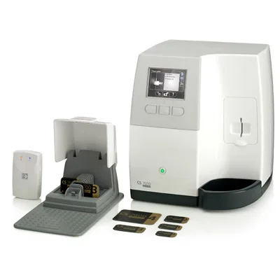
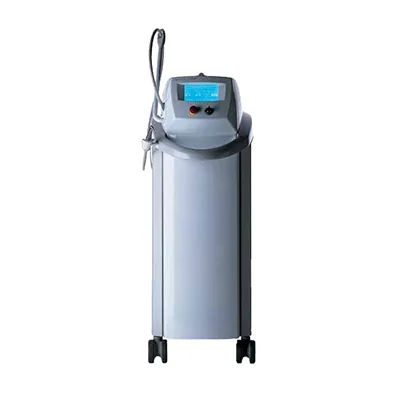
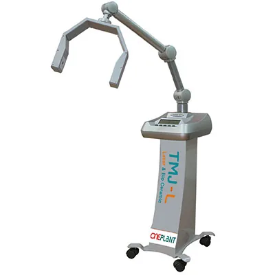
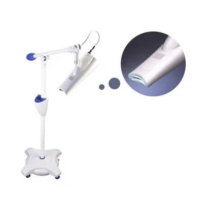
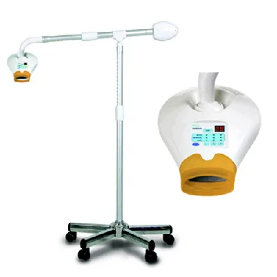
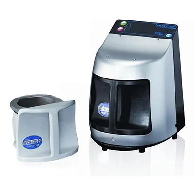
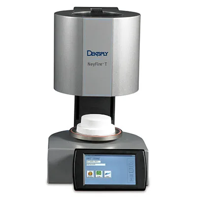

장비 8종

진단 치과용 3D CT
3D Dental CT입안과 턱뼈를 3차원 영상으로 봅니다. 영상은 디지털로 보관합니다.
진단 Image Plate
Scan&Go 방식 영상판촬영판(IP)이 섞이지 않게 관리하고, 찍은 영상을 바로 화면으로 확인합니다.
진료 KaVo 키레이저
KaVo임플란트, 잇몸성형, 스케일링, 잇몸치료, 시린 이, 충치치료, 심한 치주치료에 쓰는 레이저입니다.
진료 TMJ-L
치과 전용 복합레이저턱관절 통증 부위에 10~20분 레이저를 쬐는 턱관절 치료에 쓰고, 임플란트 수술 뒤 통증과 염증을 줄이는 치료에도 씁니다.
미백 비욘드 치아미백 라이트
할로겐 메탈 할라이드 광원미백 빛을 내는 광원으로, 열을 흡수하는 필터가 들어 있어 발열을 줄입니다.
미백 알라딘 미백기
LED 가시광선 광원미백제를 바른 치아에 LED 빛을 쬡니다.
보철 제작 TESCERA ATL
레진 인레이 제작 장비레진에 도재 알갱이를 넣어 고온·고압에서 굳힙니다. 산소가 없는 물속에서 먼저 압력을 주어 기포를 줄이고, 빛과 열로 함께 굳힙니다.
보철 제작 Porcelain Furnace
도재 소성 장비 · 프레스 기능라미네이트, 올세라믹, 크라운 같은 도재 보철물을 굽습니다.